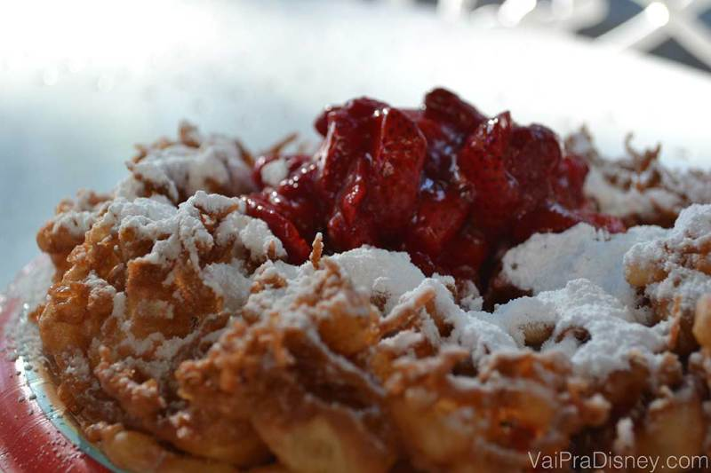

Melhores dicas

Top 10: melhores doces da Disney
Há muito tempo eu prometo uma lista das top comidinhas mais imperdíveis da Disney. Alguns de vocês até já me cobraram esta dívida antiga, mas eu queria fazer mais uma viagem à Disney para realmente tirar a teima e definir quais comidinhas mereciam ficar no top.
Na nossa última viagem, nós tomamos isso como uma missão séria e a seleção foi muito difícil. A Disney é tão grande e com tanta coisa boa, que selecionar as melhores é uma tarefa árdua. Para facilitar o meu lado e para eu poder dividir o máximo possível de indicações com vocês, eu resolvi dividir a lista em duas: o top 10 doces e os top salgados (ainda não parei pra contar quantos serão). Sendo assim, hoje segue abaixo a lista com os 10 doces que você não pode deixar e provar durante a sua viagem.
Carrot Cake Cookie, encontrado no Hollywood Studios.
Quando você pensa em bolo de cenoura, aposto que pensa naquele bolo amarelinho cheio de calda de chocolate né? Pois a versão americana desse doce é bem diferente da nossa. O bolo é feito com cenoura e várias especiarias e a cobertura é de cream cheese. Apesar de ser completamente diferente do que a gente está acostumado, eu e o Felipe adoramos a versão americana do bolo de cenoura (em inglês, carrot cake) e a versão em formato de cookie que a Disney faz. O cookie de bolo de cenoura com recheio de cream cheese pode não agradar qualquer paladar por ser tão diferente (por isso está no 10 lugar), mas definitivamente merece ser reconhecido nesta lista, pois é muito saboroso. O Fe é apaixonado por este doce que pode ser encontrado em alguns pontos da Disney, principalmente no Hollywood Studios. Eu sempre compro no Writer’s Stop, uma lojinha que pode passar desapercebida por você no seu caminho para a Streets of America mas que definitivamente vale a visita. É um dos meus cantinhos preferidos para descansar um pouco no parque.
9º- Pineapple Float
Clássicos são clássicos e não devem ser subestimados. O Pineapple Float com certeza se enquadra como um doce super tradicional da Disney que não podia ficar de fora da nossa lista. Consiste em uma espécie de sorvete (chamado de Dole Whip) boiando num suco de abacaxi. Diferente, né? Por isso mesmo você deve experimentar! Você pode escolher entre 3 sabores de sorvete: baunilha, laranja e abacaxi. Se quiser minha opinião, eu gosto mais do de baunilha. Este doce pode ser encontrado em alguns locais, sendo o Aloha Isle, na Adventure Land do Magic Kingdom o mais tradicional.
8º- Nutella & Fresh Fruit Waffle Sandwich do Sleepy Hollow
Sanduíche de Waffle com Nutella e Frutas.
Ao contrário do clássico que acabei de citar, este sanduíche de waffle é bem recente na Disney mas já está com certeza entre os doces mais gostosos. Também não é por menos, né? Waffle + Nutella+ frutas. Não preciso dizer mais nada, né? É óbvio que é incrível! Este doce só é encontrado no Sleepy Hollow, no Magic Kingdom.
7º- Sorvete do Mickey
Este é outro clássico, aliás, é o mais clássico doce dos parques. Ele não mudará sua vida mas comer o sorvete do Mickey é praticamente uma tradição da Disney, um ritual dos passeios nos parques. A cada 10 visitantes da Disney, 9 não só comem este sorvete como também tiram uma foto com ele. É isso mesmo, o sorvete é famoso o suficiente para ser astro das fotos de todo mundo, então não deixe de prová-lo. A versão mais tradicional é a carinha do mickey coberta de chocolate (como na foto), mas eu gosto bastante da versão sanduíche de sorvete, em que dois biscoitos de chocolate em formato de mickey são recheados com um sorvete muito saboroso. Escolha a versão que mais te agradar e se delicie!
6º- L’Artisan des Glace, a Sorveteria da França
Não faz muito tempo que o pavilhão da França, no Epcot, inaugurou uma sorveteria chamada L’Artisan des Glace que é maravilhosa e, em todos os sentidos, muito superior a sorveteria do pavilhão da Itália. Digo isso considerando a variedade de sabores muito maior e qualidade do sorvete muito melhor. Para mim, o mais legal da L’Artisan des Glace é que você pode fugir do básico sorvete na casquinha ou no potinho se quiser, pois eles também oferecem duas opções bem diferentes. A primeira delas é um macaron de chocolate bem grande, recheado com uma bola de sorvete de chocolate. A segunda é um brioche (um tipo de pão bem macio, típico francês) recheado com o sorvete e a cobertura de sua escolha. Detalhe: o brioche recheado é montado na hora em uma chapa quente. Ou seja, o pão fica bem quentinho, em um contraste maravilhoso com o sorvete que está dentro dele. Só experimentando para entender.
5º- Karamell-Küche, a loja de Doces de Caramelos da Alemanha
No World Showcase do Epcot, cada pavilhão traz vários itens tradicionais ou motivos de orgulho da nação que representa. No pavilhão da Alemanha, além de produtos da Adidas, salsichas e cervejas de qualidade, você encontra uma loja da Karamell-Küche, que significa ‘cozinha de caramelo’ em alemão e têm doces feitos com os caramelos da mundialmente famosa marca Werther’s. Eu tentei selecionar o doce mais gostoso da loja para colocar aqui na lista, mas TUDO lá é muito bom: a pipoca com caramelo, o cheesecake com caramelo, o caramelo coberto com chocolate, o shortbread com caramelo, e por aí vai. Por isso, achei que a loja merecia entrar inteirinha na lista e vou deixar a tarefa dura de escolher o que pedir para vocês. Boa sorte e cuidado para não levar a loja toda!
4º- Caramel Apple
Falando em caramelo, um outro doce clássico da Disney que não pode faltar é a caramel apple. Maçã verde coberta com um caramelo puxa-puxa: é a perfeita harmonia de sabores. O azedinho da maçã neutraliza o doce do caramelo em uma combinação deliciosa e nada enjoativa. Este doce até pode ser encontrado na loja da Alemanha, mas também é encontrado em centenas de outros pontos nos parques, em Downtown e até nos parques da Universal.
Eu gosto da versão mais tradicional (uma simples maçã coberta com caramelo) mas a Disney faz versões com chocolates, com flocos de arroz crocante e com formato de personagens. Eu gosto de comer a maçã inteira, como uma maçã do amor igual de festa junina (também disponível por lá, chamada de candied apple). Entretanto, se você pretende dividir a sua maçã ou acha que vai fazer muita sujeira comê-la inteira, você pode pedir para partirem a maçã em pedaços. Algumas pessoas preferem a maçã partida e acreditam que ela faz menos sujeira. Eu devo ter algum problema, mas eu acabo me sujando mais comendo ela partida, então prefiro que venha no palitinho mesmo. Partida ou inteira, o que importa é o conteúdo e esta maçã é sempre uma boa pedida.
3º- Sundae da Disney
Sundae com cobertura de chocolate.
Este sundae é simples, mas é preparado com tanta perfeição que é um dos nossos doces favoritos. O segredo para ele chegar no terceiro lugar da nossa lista não está em nenhuma novidade, mas na qualidade de todos os ingredientes (sorvete, chantilly, muita calda de chocolate e uma cereja), em especial a calda de chocolate que dá toda graça ao prato. Vou te falar uma coisa: eu não sei qual é o segredo da calda de chocolate da Disney e sou muito feliz por isso pois se eu soubesse, Felipe e eu engordaríamos uns 30kg. Ela é perfeita para o meu gosto! Este Sundae pode ser encontrado em vários lugares da Disney, mas eu gosto de comprá-lo na Plaza Ice Cream Parlor, na Main Street USA do Magic Kingdom. Assim, além do sabor, o clima mágico colabora para tornar a experiência de tomar o sundae ainda mais especial. Depois de comprar o sorvete, eu gosto de sentar na Main Street e ficar observando as pessoas e sentindo aquele clima mágico que só a Disney tem.
2º- Doces da Boardwalk Bakery
A Boardwalk Bakery é provavelmente o lugar da Disney com maior concentração de coisas gostosas por m². Se você já leu o post que fizemos sobre o Boardwalk, já deve saber que eu sou fã deste lugar que possui uma variedade bem grande de doces, pães e sanduíches, tudo sempre muito fresquinho. Eu sinto que não importa o que eu escolha, eu sempre vou me dar bem na Boardwalk Bakery, simplesmente porque tudo que eles fazem é maravilhoso. Até hoje, eu nunca comi nada que eu não gostasse lá, e olha que eu já experimentei boa parte do cardápio deles, viu? Mais uma vez, eu sou incapaz de selecionar apenas um doce para entrar no podium dos Top Doces do Vai pra Disney. Eu até tenho um doce preferido, mas como ele envolve banana, manteiga de amendoim, chocolate e BACON, tudo num doce só, acho que os coleguinhas podem preferir outra coisa, né? Então escolha o que preferir e tenho certeza que você vai se dar bem. Acima você vê as fotos de alguns dos nossos preferidos.
1º – Funnel Cake with Strawberry Sauce

Melhor doce de todos, rei absoluto! Indiscutivelmente o nosso preferido. O Funnel Cake é um doce que parece um ninho de massa de bolinho de chuva e fica milhões de vezes melhor quando acompanhado de calda de morango e chantilly. Não tem como explicar, você só vai entender quão incrível ele é quando experimentar. Depois me conta o que achou. Estou falando do doce que ganhou de longe da nutella, de todo o caramelo e até da calda de chocolate diva da Disney. Se você não acredita em mim, procure nos comentários do blog pois já recebemos diversas mensagens de leitores que também ficaram viciados no Funnel Cake depois de lerem sobre ele nos nossos roteiros.
O Funnel Cake está disponível em diversos pontos de todos os parques da Disney mas fique atento, pois não são todos iguais (o do Epcot por exemplo, é gorduroso demais). O Funnel Cake com Calda de Morango, que é o nosso grande favorito, só é encontrado em 2 lugares. Não se engane achando que a calda é só um acompanhamento pois ela é muito mais que isso, ela é o complemento perfeito e sem ela o Funnel Cake não estaria no primeiro lugar da lista. Aliás, se eu tivesse que escolher entre a calda de morango e o Funnel Cake, eu escolheria a calda. Eu já comi essa calda com waffle e fica excelente. Aposto que ela fica incrível até com um pão velho amanhecido.
Nós recomendamos comer Funnel Cake no Sleepy Hollow, dentro do Magic Kingdom, ou no Hollywood Studios, num quiosque que fica do lado do show do Indiana Jones. A versão do Magic Kingdom (minha preferida) pode acompanhar chantilly e a do Hollywood Studios pode acompanhar sorvete.
Gostou? Vale dizer que esta é só a nossa lista de doces preferidos. A Disney tem uma infinidade de opções de comidinhas diferentes e deliciosas que ficaram de fora da nossa lista (como as lembradas na foto acima). Mais do que seguir esta lista, encorajo muito vocês a explorarem tudo por lá e montarem a lista pessoal de vocês. E se você descobrir algo imperdível, não deixe de contar pra gente aqui.